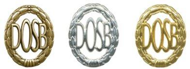
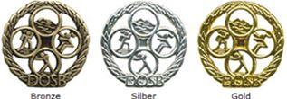
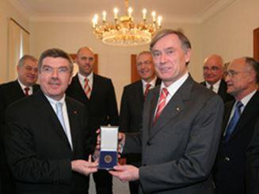
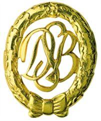
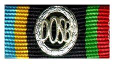
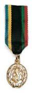
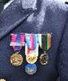
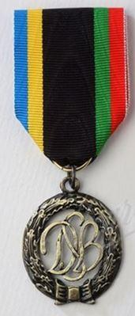
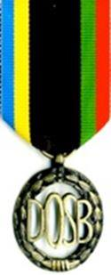

L’ORFACE a toujours été très attentif à l'organisation de l'éducation physique et sportive en faveur des jeunes surtout dans la mise en œuvre de la Deutsches Sportabzeichen en France. Les enjeux de continuité éducative pour les jeunes sur l'ensemble du territoire national dans un contexte bilatéral sont des priorités absolues pour l’ORFACE depuis des décennies. L'enjeu prioritaire de l’ORFACE est de multiplier les actions sportives franco-allemandes (élargi à d’autres pays en fonction des opportunités) par l'instauration de journées de préparation à l’obtention de l’insigne des sports allemands. Ce dernier valorisé par un certificat officiel délivré et visé par le président du DOSB (Comité Olympique et Sportif Allemand) après la réussite de plusieurs épreuves sportives aurait un impact favorable non seulement sur la santé des élèves, la réussite scolaire mais aussi en faveur de la coopération franco-allemande. L'ambition de l’ORFACE est de renforcer la place du sport à l'école ainsi que celle du sportif dans l'école et encourager le développement de la continuité éducative dans la pratique sportive des élèves du premier, du second degré et de l'enseignement supérieur dans un contexte européen.
Institutionnaliser une initiative citoyenne
En France, la baisse de pratique des jeunes générations est très alarmante. Il y a donc urgence, ce dont la Cour des comptes s'est fait l'écho dans un rapport de septembre 2019 en formulant onze recommandations, parmi lesquelles : renforcer l'enseignement de l'EPS dans le primaire, revitaliser l'organisation du sport scolaire, faciliter les liens entre l'école et le sport ou encore donner au système éducatif des objectifs vérifiables dans le domaine de l'EPS. L’équipe de l’ORFACE s’engage depuis des décennies à développer des actions qui vont dans le sens de ces recommandations. Le Deutsches Sportabzeichen constituerait un excellent outil au service du lien bilatéral et véhiculerait une image originale non seulement en en faveur de la jeunesse.
L’insigne des sports allemand, qu’est-ce que c’est ?
Un tiers de tous les citoyens en République fédérale d’Allemagne pratique régulièrement du sport, à la recherche du bien-être physique. En Allemagne, pour honorer les hommes, les femmes et les jeunes pour leur mérite sportif, il a été institué une distinction honorifique valorisant la réussite à des tests sportifs de performance et de diversité. La consécration des activités sportives dans le sport de masse est matérialisée en République fédérale d’Allemagne par la remise de l’insigne des sports allemands-Deutsches Sportabzeichen ou DSA. Le DSA est une reconnaissance symbolique pour les bonnes et diverses performances physiques réalisées, que chacun peut acquérir en République fédérale d’Allemagne et à l’étranger, après avoir gagné jusqu’alors les minimas sportifs sur cinq épreuves issues de nombreuses disciplines sportives. Le DSA est un insigne strictement civil. Les diplômes délivrés par les fédérations des Länder ou directement par le DOSB ne portent aucun grade ni aucun titre. À ce jour, il existe trois échelons : bronze, argent et or qui sont caractéristiques du niveau de performances acquises. (Pour des raisons de commodités nous utiliserons tout au long de ce document les acronymes DSB-DOSB et DSA). Depuis le décret présidentiel du 4 juillet 1958, traitant des décorations et des insignes honorifiques de la RFA, le DSA fait partie intégrante des distinctions officielles allemandes. Délivré après-guerre par le Deutscher Sport Bund (ou DSB) c’est aujourd’hui le Deutscher Olympischer Sport Bund (DOSB) qui décerne le « Deutsches Sport Abzeichen » en tant que distinction sportive honorifique civile. Le DOSB assure la préservation, la promotion et le développement de l‘idée olympique. Il s’engage de façon diverse dans le sens d’une culture olympique et de la transmission des valeurs humaines à l’intérieur du sport et par le sport. Selon la devise « le sport pour tous », le DOSB développe des programmes grâce auxquels le sport est rendu accessible au plus grand nombre de personnes, indépendamment de leur âge, leur sexe ou leur origine sociale.
L’intérêt du DSA réside dans le fait que les performances sont basées sur la participation collective à des épreuves placées à la portée du plus grand nombre. C’est par conséquent promouvoir sans esprit de compétition, mais avec le souci de réussir, les minimas exigés que des centaines de milliers de personnes passent chaque année dans le monde pour son obtention. Des épreuves spécifiques ont été également prévues pour les handicapés.
De très hautes personnalités du monde sportif et politique se sont régulièrement prêtées aux exercices du DSA. Pour n’en citer que deux : le président de la République fédérale Richard von Weizsäcker en 1994 puis son successeur Horst Köhler en 2006 (voir photos supra) ont passés avec succès les épreuves du DSA.
Petit rappel historique
L’idée d’un insigne sportif a été importée de Suède en Allemagne par Carl Diehm qui fut le chef d’équipe des sportifs allemands durant les jeux Olympiques de Stockholm en 1912. Dès son retour de Suède, Carl Diem propose de saisir le projet d’insigne Suédois-« Idrottsmärket des Svenska Gymnastik och Idrottsföreningarnas » - comme modèle pour établir un test sportif similaire en Allemagne.Pierre de Coubertin lui-même indiqua que pour lui les épreuves pour l’obtention du brevet sportif suédois étaient
« comme un certificat de maturité physique »
.
L’Assemblé générale du Reich allemand pour les jeux olympiques décide le 10 novembre 1912 de valider les modalités d’octroi de l’insigne allemand des sports et le 1 septembre 1913 les 22 premiers insignes sont officiellement remis. C’est à l’occasion d’un voyage d’études aux États-Unis que Diehm, devenu entretemps secrétaire générale du comité d’organisation des jeux olympiques à Berlin qui étaient prévus en 1916, découvre l’existence de « l’Athletic Badge ». Depuis 1904 cet insigne sportif était délivré aux jeunes scolaires américains par la « Public School Athletic League » de New York. Fort impressionné par ce nouveau projet, il présente les conditions d’obtention dans un rapport intitulé : « Sport et éducation physique en Amérique ».A l’issue de la première guerre mondiale l’insigne change de nom en insigne de gymnastique et des sports. En 1921, tout citoyen Allemand homme ou femme pouvait concourir pour l’insigne du sport. Le 1er juillet 1937, le régime nazi s’empare de l’administration du sport pour en faire un concept élitiste et assurer un contrôle de la jeunesse. L’insigne se transforme en récompense officielle inscrite parmi les médailles d’honneur ou ordres et devient Insigne de Sport du Reich Allemand.
La distinction cesse d’être délivrée à partir de 1944. A la sortie de la seconde guerre mondiale certains Länder remettent un insigne régional ou fédéral mais Le concept actuel de l’insigne de sport n’entre en vigueur au niveau fédéral que le 1er avril 1952. Les handicapés furent intégrés la même année et en 1969 on voit la création d’un insigne pour les jeunes scolaires. 26/27 mars 1954 se concrétisent les conditions d’attribution pour les étrangers. À compter du 1er avril 1956, l’Armée allemande est autorisée à faire passer les épreuves mais seules les fédérations sportives ont autorité pour délivrer les diplômes.
- 15 aout 1966 1 million d’insignes délivrés depuis 1913.
- 1 juillet 1978 renouvellement du partenariat avec le Bundeswehr
- 3 mai 1984 20 millions d’insignes délivrés.
- Plus de 66 pays dans le monde font passer la médaille des sports allemands.
Pourquoi un tel projet ?
Connaître ses capacités et ses limites, se réjouir de la performance réussie, consolider le sentiment de sa propre valeur sont des moteurs nécessaires à une saine émulation de la jeunesse en Europe. L’entraînement physique et sportif est une exigence majeure de la mise en condition mentale des jeunes. Il contribue de façon essentielle à la consolidation et au maintien de la capacité physique. La fréquence de la pratique sportive est par conséquent capitale. Il faut également souligner que son attribution relève, contrairement à l’attribution de la médaille de la jeunesse et des sports et de la vie associative française, de la réussite à des épreuves sportives et non pour des activités honorables tenues comme responsable au sein d’un club sportif.
Plusieurs raisons pour développer le DSA en France
La place et l'évolution du sport dans la société française, les liens qui unissent les deux pays, nous amène à promouvoir le DSA en France :
Proposer de nouvelles pistes de coopération en faveur des jeunes français et de leur famille ;
Véhiculer une image dynamique de la coopération sportive bilatérale auprès de la société civile ;
Motiver les jeunes à la pratique de challenge sportif.
Comme il ne subsiste actuellement pour les jeunes français ( à compter de 6 ans en Allemagne) à l’échelon national, il serait envisageable que le DSA devienne un test sportif effectué tout au long de l’année dans le cadre de l’amitié franco-allemande.
Ce dispositif bilatéral illustrerait de façon tangible une coopération harmonieuse dont la jeunesse française serait la première bénéficiaire et qui aurait la particularité de ne demander aucun investissement financier particulier. De par la simplicité de la mise en œuvre et l’autonomie organisationnelle, sous le contrôle technique du Coordinateur pour la France, ce projet permettrait de créer des liens originaux.
Le DSA, un modèle pour les services en uniformes ?
Dès la création de la nouvelle armée allemande en 1955, les hauts responsables civiles et militaires se réunissent afin d’aboutir en 1956 à la signature d’un protocole d’accord permettant aux militaires allemands de faire passer les épreuves au sein des unités de la Bundeswehr. La réunion de la 24ème session du présidium du DSB en date du 30 juin 1956 intégra un avenant précisant les conditions de délivrance des certificats dont la responsabilité relevait exclusivement des clubs sportifs agréés par le DSB. En outre le message n°9/57 attire l’attention sur la circulaire du ministère de la défense fédéral n°21 du 20 août 1957 qui définit les conditions d’organisation au sein des armées. Depuis et pour satisfaire à cette exigence, les autorités militaires allemandes ont décidé depuis plusieurs décennies d’intégrer le DSA dans la formation militaire générale. Elles vérifient annuellement l'aptitude physique individuelle de leurs personnels par des épreuves sportives sélectives, en étroite collaboration avec la fédération olympique sportive allemande. Ces épreuves sont organisées sous le contrôle des officiers des sports des unités habilités par le DOSB qui enregistrent les résultats obtenus afin de préparer les statistiques propres à la Bundeswehr.
Une médaille sur l’uniforme
À l’origine, l’insigne du DSA est matérialisé sous forme d’une broche ovale avec le sigle DSB (Deutscher Sport Bund) entouré de lauriers que l’on pouvait porter en Allemagne. Pour les militaires de la Bundeswehr seul le ruban aux couleurs olympiques et son applique ainsi que la miniature pour le smoking furent acceptées. Aucun militaire Allemand n’a été aperçu portant l’insigne sous forme de broche. Une confusion très répandue laisse supposer que le DSA serait une décoration militaire, décernée par l'Armée allemande. En fait il n’en est rien. La Bundeswehr ne possédant pas de brevet sportif militaire propre l'inspecteur général de la Bundeswehr décide en 1992 que tous les soldats de la Bundeswehr doivent à compter de l'existence de cette consigne passer annuellement toutes les épreuves du DSA comme preuve de leur bonne forme physique. Chaque militaire allemand ayant obtenu les minima aux épreuves de cinq groupes et obtenu le diplôme officiel du DOSB était titulaire de la DSA soit à l’échelon bronze, argent ou or. Les conditions d’obtentions ont changé depuis la réforme de 2013 car il fallait il y a encore tout juste deux ans que les épreuves sur une période de cinq ans pour obtenir l’échelon or. Depuis la médaille peut être directement accessible à l’échelon or en fonction des résultats obtenus lors des épreuves sportives. Au même titre que leurs décorations militaires les soldats de la Bundeswehr portent donc fièrement le DSA sur leur uniforme.
L’applique DOSB sur le ruban de décoration est inscrite dans une couronne de lauriers. Les militaires allemands portent l’insigne sous la forme de barrette de décoration de 25 mm de largeur et sous forme de d’insigne miniature suspendu à un ruban aux couleurs olympiques pour le smoking ou le spencer. Les couleurs de la barrette de décoration sont celles des cinq anneaux olympiques. Depuis, le DSA se trouve sur l’uniforme d’autres armées (françaises par exemple) sous forme traditionnelle de barrette de décoration de 35 mm ou dans une version ordonnance (particularité concédée par le DSB aux étrangers).
Une décoration allemande pour les Français !
Le conseil de surveillance de la direction sport populaire du « Deutscher Sport Bund » confirme par courrier en date du 22.04.1996, qu’une dérogation exceptionnelle permet dorénavant aux citoyens étrangers détenteurs du diplôme du DSA de porter le DSA sous forme de médaille. Par conséquent les barrettes de décorations de taille allemande 25 mm ont pu être fabriqué aux normes de 35 mm. (Néanmoins une des conditions expresses de la part du DOSB est d’acquérir la médaille auprès du seul fabriquant officiel du DSB).
Une succes story
On peut considérer que depuis les années 90 plusieurs milliers de français, sont aujourd’hui détenteur de cette distinction sportive allemande. C’est le plus bel exemple de promotion sportive franco-allemande à ce jour.
Quand le DSB devient DOSB
Le 20 mai 2006 Le DSB est réorganisé et prend dorénavant le nom DOSB (Deutscher Olympischer Sportbund - Confédération Olympique et Sportive Allemande), l’organisme central non-gouvernemental pour le sport allemand est créé par la fusion de la Confédération des Sports Allemande (DSB) et du Comité National Olympique pour l’Allemagne. Ce changement a pour corolaire que l’insigne porte désormais son nouveau sigle en place et en lieu de l’ancien. Les responsables de la direction sport populaire maintiennent l’existence de la médaille pour la France. En 2013 les conditions d’obtention changent et dorénavant les sportifs peuvent en fonction de leurs résultats atteindre directement l’échelon or. L’acquisition des niveaux « bronze, argent et or » ne se fait plus de manière successive. Pour chaque série d’épreuves, en fonction du sexe et de la catégorie d’âges, trois barèmes sont affichés correspondants respectivement au bronze, à l’argent et à l’or. Ainsi, le participant reçoit 3 points s’il réussit le barème or (respectivement 2 et 1 point pour l’argent et le bronze).
Sachant qu’il y a quatre groupes d’épreuves avec ces barèmes, une comptabilisation est faite à l’issue de la séance et donne droit aux échelons ci-dessous : Échelon Or : Entre 11 et 12 points ; Échelon Argent : Entre 8 et 10 points Échelon Bronze : Entre 4 et 7 points.
L’interlocuteur institutionnel franco-allemand
Reconnue pour son engagement sportif par les plus hautes autorités de l’Etat en France comme en Allemagne, l’ORFACE a dans ses activités gardé une place de choix dans le paysage multilatéral pour le sport. En coopération avec le Coordinateur allemand France qui a une très longue expérience dans l’organisation du DSA. Celui-ci a en charge la promotion et le contrôle des épreuves du DSA en France. En outre il donne les autorisations de manifestations sportives pour l’obtention du DSA, gère la formation et le soutien des contrôleurs en France et assure la liaison entre les institutions sportives. Cette structure est soutenue par l’ORFACE qui coordonne des activités promotionnelles et d’organisation concernant le DSA en Europe et dans le monde. Mais, seul le coordinateur allemand a autorité sur le DSA en France. Il a la charge et la responsabilité de sa bonne administration, auprès des instances du DOSB. Il est également seul à défendre les intérêts du DOSB en France.
En conclusion
A la veille des Jeux Olympiques de 2024, la mise en place du DSA contribuerait à dynamiser le projet éducatif franco-allemand des établissements scolaires universitaires etc en lien avec le mouvement sportif et les collectivités.
La mise en place d'un parcours « éducatif et sportif franco-allemand » renforcerait la reconnaissance de la place du sport dans la formation de l'élève dans un projet européen.
Partager cette page